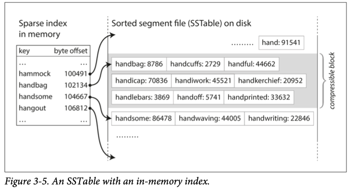
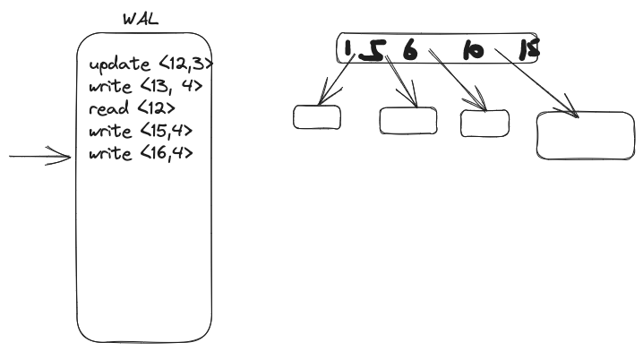
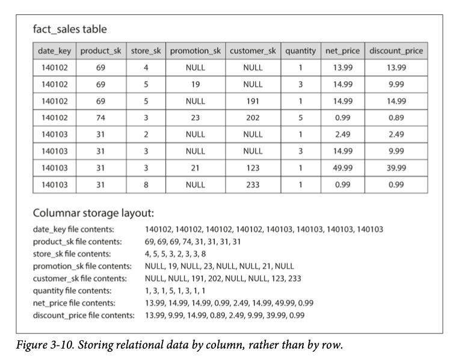

Chapter 3
Chapter 2 is written in programmers perspective about data model This chapter will discuss the same from database's point of view: how we can store the data that we're given, and how we can find it again when we're asked for it
First, why we care how the database handles storage and retrieval internally?
Although we don't need to write our own storage engine, we do need to choose a storage engine that is appropriate for our application
Two families of storage engines are discussed: log-structured storage engines, and page-oriented storage engines such as B-trees
Data structures that power your database¶
simplest kv pair database
#!/bin/bash
db_set () {
echo "$1,$2" >> database
}
db_get () {
grep "^$1," database | sed -e "s/^$1,//" | tail -n 1
}
db_set has actually really good performance \(O(1)\) because it is append only at the end of the file. But db_get has \(O(n)\) because it needs to look up the entire database for a key
绝大多数 database 以及 OS 都有一个 append only log (也叫 write ahead log), 就是类似于这个 append only file. 只不过 DBMS 或者 OS 要保证定期清理这个log 以避免不断增长。distributed system 其实也是基于一个log 来的，感兴趣请看the log 这篇文章
In order to efficiently find the value for a particular key in the database, we need a different data structure: an index.
这里就要引出 index 的概念了。This chapter will look at a range of indexing structures and how they compare
The general idea behind them is to keep some additional metadata on the side
就是通过 meta data (pointer etc) 来帮助 locate the data
An index is an additional structure that is derived from the primary data
索引是由主要数据衍生出来的数据, 就像每本书后面的索引一样，用来帮助 locate data 维护一个additional structure 就会有 overhead，especially on writes because index needs to be updated every time data is written
所以 database default 是不会给所有数据做 index 的，而是 application developer 来选择哪些数据需要 index
Hash Indexes¶
Hash index 估计是最常见的 index 形式了，java 的 Map, python 的 dict 以及 json 都是key-value pair
既然已经有 in memory data structure 了，on disk 也可以用 hash 来 index 加入我们有一个 append only file, 最简单的一个 indexing strategy 就是在 in memory hash map 里面存一个你要查找的 key， value 则是 byte offset for the append only file, 想要查哪个值，直接去对应的file 的 offset里面读取就可以了
This may sound simplistic, but it is a viable approach. In fact, this is essentially what Bitcask (the default storage engine in Riak) does
想算一个url 的点击数量这种 workload 就很适合 Bitcask 这种 storage engine (a lot of writes, not too many distinct keys (only urls)) in other words, large number of writes per key, and keys are small enough to fit in memory
How to avoid running out of disk space?¶
break the log into segments and when a segments reach to a certain size (lets say 5mb) making subsequent write to a new segment file and perform compaction on these segments. 这里的compaction 就直接把最新的值记录下来，而且可以在 background thread 进行
while it is going on, we can still continue to serve read and write requests as normal, using the old segment files. After the merging process is complete, we switch read requests to using the new merged segment instead of the old segments—and then the old segment files can simply be deleted.
每一个 segment 在 memory里面都有自己的 hash table, mapping keys to file offset. In order to find value for a key, we first check the most recent segment hash map; if the key is not present we check the second most and so on
Map<key, data> seg1;
Map<key, data> seg2; # <- check this first
...
There is a lot of details in implementation:
File format CSV is not best format. binary is faster and simpler Deleting records Append a special deletion record to the data file (sometime called a tombstone) when log segments are merged, tombstone tells the merging process to ignore any previous value for deleted key Crash recovery If database is restarted, in memory hash maps are lost. In principle you can restore it by reading the entire segment file. but it takes too long if segment file gets large. Bitcask speeds up recovery by storing snapshot of each segment's hashmap on disk Partially written records database may crash at any time, including halfway through appending to the log. Bitcask files include checksum, allowing such corrupted parts to be detected and ignored Concurrency control Since it is append only, a common implementation is to have 1 writer thread. And many reader threads.
Compare to update file in place, append only design has following advantages: - Sequential writes are generally much faster than random writes. Especially on spinning disk. To some extent sequential writes are preferable in SSD 4 - Concurrency and crash recovery are much simpler if segment files are appendonly or immutable. For example, you don’t have to worry about the case where a crash happened while a value was being overwritten, leaving you with a file containing part of the old and part of the new value spliced together. - Merging old segments avoids the problem of data files getting fragmented over time.
But it also has limitations: - must fit in memory - range queries are not efficient
SSTables and LSM-Trees (log structure)¶
SSTable 就是在之前 append only segments的基础上让 key sorted and unique。所以叫做 Sorted String Table (SSTable for short) SSTables 相比于 hash indexed log segment 有几个好处 1. Merging segments is simple and efficient (similar to mergesort) if one key appears more than 1 segment, keep the most recent one 2. No longer need to keep index of all the keys in memory. Just like binary search tree, you could get the floor key of current key your are looking for. Then get into the segment you need. \(handb < handi < hands\)  This way the index is sparse which allow us to store more keys (each segment can be few kilobytes so that it can be scanned quickly). Just like page fault in memory, it will also go to disk to bring relevant file content in memory 3. Compress a segment into a block before write to disk and save I/O
Constructing and maintaining SSTables¶
How do you get your data to be sorted by key? In memory we have well known data structure - BST - red black tree - AVL trees We can now make our storage engine work as follows: - When write comes in, add it to our in memory balanced tree data structure (red black tree). Those in memory tree is sometimes called memtable - when the in memory tree gets bigger than some threshold (few megabytes), write it out to disk as an SSTable file. This file will become the most recent segment of the database. While SSTable is being written out to disk, writes can continue to a new memtable instance - In order to serve a read request, first try in memory tree. If key is not found, then most recent on-disk segment, then older etc. - From time to time, run merge and compaction process in the background to combine segment files and discard the overwritten and deleted value
This technique works well except when database crashes. The most recent writes are lost (in memory). We can keep a separate log on disk to avoid this problem. This log is append only and does not require key to be sorted because it is for recovery only. We could discard the log once the in memory tree is written to disk
Making an LSM-tree out of SSTables¶
LevelDB and RocksDB essentially use the technique above to build their storage engine. key-value engine libraries that are design to be embedded into other applications. LevelDB can be used in Riak as an alternative to Bitcask. Similar storage engine are used in Cassandra and HBase 8, which are inspired by BigTable
Log-Structured merge tree (LSM tree) originated from this paper. Storage engines based on this principle of merging and compacting sorted files are called LSM storage engines.
Lucene(indexing engine for Elaticsearch and Solr) uses a similar method for storing its term dictionary, where key is the term (word) and the value is the list of IDs of all the documents (posting list) that contain the word
In Lucene, this this mapping from term to posting list is kept in SSTable-like sorted files
Performance optimizations¶
A lot of details when implementation happens. LSM-tree algorithm can be slow when looking up keys that do not exist. (check in memory tree, check all segment files etc)
In order to optimize this, storage engine often use Bloom filters, which tells you if a key does not appear in the database, and thus saves many unnecessary disk reads for nonexistent keys.
There are also different strategies of how SSTables are compact and merged.
The most common options are size-tiered and leveled compaction.
In sized-tiered compaction, newer and smaller SSTables are successively merged into older and larger SSTables.
In leveled compaction, the key range is split up into smaller SSTables and older data is moved into separate "levels", which allows the compaction to proceed more incrementally and use less disk space.
the basic idea of LSM-trees—keeping a cascade of SSTables that are merged in the background—is simple and effective. Even when the dataset is much bigger than the available memory it continues to work well. Since data is stored in sorted order, you can efficiently perform range queries (scanning all keys above some minimum and up to some maximum), and because the disk writes are sequential the LSM-tree can support remarkably high write throughput.
B-Trees (page structure)¶
Most common type of index structure.
Like SSTables, B-trees keep key-value pairs sorted by key, which allows efficient key- value lookups and range queries. But that’s where the similarity ends: B-trees have a very different design philosophy.
Segment 通常是由一个个 variable size segment 组成的。 与之对应的 btree 则是用 fixed-size blocks or pages (为了更好的跟 disk 上面的 blocks/page 对应起来) normally in 4 kb and read or write one page at a time
memory 也是由 page 组成的，所以 btree 可以把 memory page 写入 disk，或者把 disk page bring 进 memory 里面
每一个 page 可以由 id 或者 address 来读取，这就可以让 btree 在 disk 上面用指针的方式从一个 page 指向一个 另一个 page, 并用 tree 的形式表达出来
只要不是 leaf node, 每一个 page 都负责 continuous range of keys, 从 root 开始，找到你当前 key 所在的区间，然后进到下一个 child page，直到 leaf node 为止
b-tree 里面每一个 page 能包含多少个 child reference 就是 branching factor，比如上面这张图的 branching factor 是6
In practice, the branching factor depends on the amount of space required to store the page references and the range boundaries, but typically it is several hundred.
for updating value in b-tree, you search for leaf node/page that contains current key and change the value in that page, and write the page back to disk. If you want to add new key, you perform same search for the leaf page. Add new key and write to disk
If there isn't enough free space, it split into half-full pages, and parent page is updated to account for the new subdivision of key ranges
This algorithm guarantees tree remains balanced, that is, b-tree with n keys always has depth of \(O(log\ n)\)
Most databases can fit into a B-tree that is three or four levels deep, so you don’t need to follow many page references to find the page you are look‐ ing for. (A four-level tree of 4 KB pages with a branching factor of 500 can store up to 256 TB.)
Making Btree reliable¶
Basic write operation is to overwrite page on disk with new data (assumed overwrite does not change the location of the page)
就是在写入的时候 reference 不会变 相比 log structure，b-tree 会 overwrite instead of append only, 这意味着在 hard disk 上面的读写指针会移动到相关page 然后 overwrite 更进一步来说，如果一个操作需要写入多个 page，比如 split a page, 那么你需要把这两个 page 先写入硬盘的相关位置，然后更新 parent page 的指针
为了防止写一半的时候停电这种情况，这种操作都会先写入一个log，在执行。 这个log 就是 write-ahead log(WAL)

BTree optimizations¶
optimization 有很多种方式 - Instead of overwriting pages and maintaining a WAL for crash recovery, some databases (like LMDB) use a copy-on-write scheme. 写入的时候先 copy 到另一个 location, then new version of the parent pages is created, pointing to that new location. 这种方式适合 snapshot isolation - Save space by abbreviating the key. Packing more keys into a page allows the tree to have a higher branching factor, thus fewer levels (This variant is known as \(B^{+}\) tree) - Lay out the leaf pages in sequential order to speed up reads but it is difficult to maintain as the tree grows. LSM-trees on the other hand is easier - Additional pointers have been added to the tree. For example, each leaf page may have references to its sibling pages to the left and right, which allows scanning keys in order without jumping back to parent pages.
Comparing BTree and LSM-Trees¶
As a rule of thumb, LSM-trees are typically faster for writes, whereas B-trees are thought to be faster for reads However, benchmarks are often inconclusive and sensitive to details of the workload. You need to test systems with your particular workload in order to make a valid com‐ parison. In this section we will briefly discuss a few things that are worth considering when measuring the performance of a storage engine.
Advantages of LSM-trees¶
Every write to B-tree occur at least twice, 1 for WAL, 1 for tree page itself (perhaps more if page needs to split).
Log-structured indexes also rewrite data multiple times due to repeated compaction and merging of SSTables. This effect—one write to the database resulting in multiple writes to the disk over the course of the database’s lifetime—is known as write amplification.
LSM tree 通常可以经受住更高的写入需求，因为 append only 的方式，但这也取决 storage engine 的 configuration and workload
This difference is particularly important on magnetic hard drives, where sequential writes are much faster than random writes.
LSM tree 因为 compaction 会节省更多的 space (b-tree 有可能有的page 还有 free space 而 segment 在 compact 过后只包括最新的数据了)
On many SSDs, the firmware internally uses a log-structured algorithm to turn ran‐ dom writes into sequential writes on the underlying storage chips, so the impact of the storage engine’s write pattern is less pronounced
Downsides of LSM-trees¶
成也 compaction, 败也 compaction。
Even though storage engines try to perform compaction incrementally and without affecting concurrent access, disks have limited resources, so it can easily happen that a request needs to wait while the disk finishes an expensive compaction operation.
the impact on throughput and average response time is small but at higher percentiles can be high. (p99 or p99.9)
When writing to an empty database, the full disk bandwidth can be used for the initial write, but the bigger the database gets, the more disk bandwidth is required for compaction.
当一个 database 变的越来越大的时候，有一部分的 disk bandwidth 就需要用来 compaction了
还有一种情况就是 incoming writes 的速度比你 compaction 的速度要快，那么unmerged segments 就会不断变大，最后 run out of disk space, 并且你读的速度也会变慢，因为如果一个key 不在memory，需要看更多的 segment。
An advantage of B-trees is that each key exists in exactly one place in the index, whereas a log-structured storage engine may have multiple copies of the same key in different segments. This aspect makes B-trees attractive in databases that want to offer strong transactional semantics: in many relational databases, transaction isola‐ tion is implemented using locks on ranges of keys, and in a B-tree index, those locks can be directly attached to the tree
B-trees are very ingrained in the architecture of databases and provide consistently good performance for many workloads, so it’s unlikely that they will go away anytime soon.
总的来说绝大部份的 DB 还是在用 btree， 如果是 high write application, 可以根据 workload 进行测试
Other indexing structures¶
其实上面这两个应该是 storage structure 而不是 indexing structure.. 因为他们本质上都还是 k-v indexing..
primary key, secondary key. secondary key is crucial for performing joins efficiently.
for example

A secondary index can be constrcuted from a k-v index. The main difference is that keys are not unique. i.e., there might be many rows (documents, nodes) with the same key. This can be solved in 2 ways: - list of rows/document with current id
| id | row/doc |
|---|---|
| 131 | 123, 456, 789 |
| - making each key unique by appending a row id to it |
| id | row/doc |
|---|---|
| 1-123 | 123 |
| 1-456 | 456 |
Either way, both b-trees and log structured can be used as secondary indexes 就是存储方式不一样嘛?
Storing values within the index¶
The key in an index is the thing that queries search for, but the value can be 1 of 2 things 1. Actual row (document, vertex) 2. Reference to row For second case, the place where rows are stored is known as heap file. The heap file approach is common because it avoids duplicating data when multiple secondary index are present: each index just reference a location and actual data is kept in one place 这样就可以 overwritten in place 了，前提是 value 小于等于现在的 value, 不然需要新开一个 page 然后update reference
The situation is more complicated if the new value is larger, as it probably needs to be moved to a new location in the heap where there is enough space. In that case, either all indexes need to be updated to point at the new heap location of the record, or a forwarding pointer is left behind in the old heap location
在一些情景下，这多余的一次 lookup 会变的很昂贵，所以有了 store the indexed row directly within an index. Known as clustered index
For example, in MySQL’s InnoDB storage engine, the primary key of a table is always a clustered index, and secondary indexes refer to the primary key (rather than a heap file location)
这就有了 tradeoff
As with any kind of duplication of data, clustered and covering indexes can speed up reads, but they require additional storage and can add overhead on writes.Databases also need to go to additional effort to enforce transactional guarantees, because appli‐ cations should not see inconsistencies due to the duplication.
Multi column indexes¶
之前说的都是一个key map 到一个 value 上面，如果需要多个 column map 到一个 key 上面，通常用的方法是 concatenated index, which simply combines several fields into one key by appending one column to another
for example, (lastname, firstname) would be concatenated key on phonebook when you lookup phone number. 这样你可以找到所有 lastname 或者 lastname + first name 开头的人的电话号码了
multi-dimensional indexes 是一种更通用的 multi column index. 比如一个 map search website 的 database contain latitude and longitude of each restaurant. When user search for a restaurant, the website needs to search for all restaurants within a rectangular map area that user is currently viewing. This requires 2d range query like the following:
SELECT * FROM restaurants
WHERE latitude > 51.4946 AND latitude < 51.5079
AND longitude > -0.1162 AND longitude < -0.1004;
A standard B-tree or LSM-tree index is not able to answer that kind of query efficiently
因为他们都是一个维度的 key index. 一种解决方案是把 2d location translate into single number using a space-filling curve, then use regular b-tree index. 更 common 的方式是用 geospatial indexes such as R-trees.
multi dimensional indexes 不一定只在地理查询有帮助，比如我们也可以把颜色 model 成一个 3d indexes (red, green, blue) 用来查询一个符合条件颜色区间内的物品 (ecommerce, inventory database 都可以用到)
或者你可以对一个 weather db 的 (date, temperature) 建一个 2d index 然后 efficiently search for all the observations during the year 2013 where the temperature was between 25 and 30.
Full text search and fuzzy indexes¶
目前为止提到的 index 都必须 exactly match 才行，为了达成 fuzzy search (similar key) 就需要用到 edit distance 方法了，Lucene 在它 in memory 里面用的是 trie data structure, 然后用 Levenshtein automaton 来支持 efficient search for given edit distance
Other fuzzy search techniques go in the direction of document classification and machine learning. See an information retrieval textbook for more detail [e.g., 40].
TF-IDF 之类的
Keep everything in memory¶
上面的 data structures 都收到了 disk 的限制，
With both magnetic disks and SSDs, data on disk needs to be laid out carefully if you want good performance on reads and writes. However, we tolerate this awkwardness because disks have two significant advantages: they are durable (their contents are not lost if the power is turned off), and they have a lower cost per gigabyte than RAM.
随着 RAM 的价格变低，很多的 dataset 并没有那么大 (less than 10GB) 所以我们完全可以把整个 DB 放在 memory里面，所以有了 in memory database. Memcashed, Redis 有几种方式让 in memory db persistent. 比如给 RAM 加上 battery，writing log of changes to disk, write periodic snapshots to disk, replicating memory state to other machines
所以如果 in memory db crashed, 他们可以从 disk，或者 replica 那边恢复原来的数据
Counterintuitively, the performance advantage of in-memory databases is not due to the fact that they don’t need to read from disk. Even a disk-based storage engine may never need to read from disk if you have enough memory, because the operating system caches recently used disk blocks in memory anyway. Rather, they can be faster because they can avoid the overheads of encoding in-memory data structures in a form that can be written to disk
主要还是 disk structure 需要 maintain 每个 page 的 inode，disk block 这类的信息
Recent research indicates that an in-memory database architecture could be extended to support datasets larger than the available memory, without bringing back the over‐ heads of a disk-centric architecture
书里面也提到了这跟 OS 的 virtual memory 以及 swap file 类似。 只不过 DB 对于自己管理的数据更了解，所以能够 work at the granularity of individual records rather than entire memory pages.
Further changes to storage engine design will probably be needed if non-volatile memory (NVM) technologies become more widely adopted
如果NVM 大面积使用，那么 DB 的 implementation 肯定会有大的变化
https://colin-scott.github.io/personal_website/research/interactive_latency.html
Transaction processing or Analytics?¶
早期的 data processing 都跟 commercial transaction 有关： making a sale, placing an order, paying employee's salary etc
As DB expanded into areas that didn't involve money changing hands, the term transaction stuck. Referring to a group of reads and writes that form a logical unit.
尽管数据库已经用在很多不同的数据上面了 (comments on blogs, actions in games, contacts in an address book) 这些也可以用 business transaction 来实现。app 通常通过 key 找到相关数据，根据用户的input 更新结果。因为这些应用是实时的，这些 access pattern 也叫做 online transaction processing (OLTP)
还有一种非常不同的 access pattern, 是用来做数据分析的，也叫做 online analytic processing (OLAP) OLAP 通常需要 scan over a huge number of records and calculate aggregate statistics (such as count, sum, or avg) if your data is a table of sales transactions, then analytic queries might be - What was the total revenue of each of our stores in Jan? - How many more bananas than usual did we sell during our latest promotion? - Which brand of baby food is most often purchased together with brand X diapers? 这类的 query 通常是由 business analysts 写的，用来帮公司管理层来决策
下面是一张对照图
早期 OLTP and OLAP 都在一个 DB 上面跑，后来公司把 OLAP 分出来专门用 data warehouse 来执行了，因为这样不影响 OLTP 的 latency
Data Warehousing¶
一个企业可能有多个不同的 transaction processing system，system powering the customer facing site, checkout systems in physical stores, system for tracking inventory in warehouse, system for routing vehicles, managing suppliers, administering employees etc. 而这些 transaction system 必须highly available. 所以 DB admin 不会让 business analysts run ad hoc analytic queries on OLTP database. 因为这些 query 通常需要 scan 整个 table 从而影响其他 query的latency Data warehouse 则是专门用来给 analysts 分析数据用的，data warehouse 一般把各种不同的数据都整合在一起，方便别人查询 把各种不同的数据整合的过程叫做 Extract-Transform-Load (ETL). 在这个过程中，不同 schema 的数据会被整合成适合数据分析的 schema
小公司可能不需要 data warehouse, 因为一个 db 甚至是 spreadsheet 就可能解决问题了
Divergence between OLTP DB and data warehouses¶
Data warehouse 用的 data model 通常是 relational，因为 SQL 非常适合 analytics query. 而且有很多图形化的工具可以生成 SQL queries, 把结果可视化
data warehouse 跟 relational OLTP 在表面上看起来很像，但他们分别对不同的 query 做了不同的优化。database vendor 通常支持 transaction workload or analytics workload but not both
Data warehouse vendors such as Teradata, Vertica, SAP HANA, and ParAccel typi‐ cally sell their systems under expensive commercial licenses. Amazon RedShift is a hosted version of ParAccel.
More recently, a plethora of open source SQL-on- Hadoop projects have emerged; they are young but aiming to compete with commercial data warehouse systems. These include Apache Hive, Spark SQL, Cloudera Impala, Facebook Presto, Apache Tajo, and Apache Drill [52, 53]. Some of them are based on ideas from Google’s Dremel [54].
Hive, Spark, Presto 这些工具好像挺出名的，是 SQL on data warehouse
Stars and Snowflake schema¶
Chapter 2 讲了很多 transanctional data model。这里 analytics 的 data model 就两种 star schema and snowflake schema
用一个零售店举例子 在 schema 最中间的叫做 fact table, fact table 的每一行表示在一个时间发生的事件 (用户买了一个商品)
Usually, facts are captured as individual events, because this allows maximum flexibility of analysis later. However, this means that the fact table can become extremely large. A big enterprise like Apple, Walmart, or eBay may have tens of petabytes of transaction history in its data warehouse, most of which is in fact tables
column 则是在那个时间的时候对应的数值 such as price at which the product was sold 或者指向另一个 dimension table， 比如 the name of the customer. 这些指针就是 foreign key reference. 通常回答 who, what, where, when, how, why 这些问题
Even date and time are often represented using dimension tables
这样更方便encode 节日之类的信息, 比如图片里的例子就可以用一个 boolean 表示当天是否是节日
star schema 的名字其实就跟它长相一样，snowflake schema 名字也是这么来的，只不过 snowflake schema 把每个 dimension table further broken down into subdimensions. 比如把每一个 brand 以及 product category 再用一个 dimension table 表示出来。
Snowflake schemas are more normalized than star schemas, but star schemas are often preferred because they are simpler for analysts to work with
Column Oriented Storage¶
If you have trillions of rows and petabytes of data in your fact tables, storing and querying them efficiently becomes a challenging problem.
有时候 analytics query 只需要几百个 column 中的几个， 比如 example 3.1
SELECT
dim_date.weekday, dim_product.category,
SUM(fact_sales.quantity) AS quantity_sold
FROM fact_sales
JOIN dim_date ON fact_sales.date_key = dim_date.date_key
JOIN dim_product ON fact_sales.product_sk = dim_product.product_sk
WHERE
dim_date.year = 2013 AND
dim_product.category IN ('Fresh fruit', 'Candy')
GROUP BY
dim_date.weekday, dim_product.category;
date_key, product_sk, quantity 这几个 column，那么如何有效的执行这个query呢？
大多数 OLTP 的系统都是用 row oriented structure 来存数据的，所以每次你 query的时候尽管只需要其中一部分的 column，他还是会把每一个row的所有 column 从disk 读进 memory. 这就导致query 变慢
column oriented storage 就可以很好的解决这个问题，他不是按 row 来存而是按照 column 来存，

他们也是按照row的顺序排列好的，所以可以重组成原来的row
Thus, if you need to reassemble an entire row, you can take the 23rd entry from each of the individual column files and put them together to form the 23rd row of the table.
Column compression¶
column storage 的重复次数很高所以很适合 compression, 有很多种 compression 方法，这里介绍了 bitmap encoding
Bitmap indexes such as these are very well suited for the kinds of queries that are common in a data warehouse. For example: WHERE product_sk IN (30, 68, 69):
Load the three bitmaps for product_sk = 30, product_sk = 68, and product_sk = 69, and calculate the bitwise OR of the three bitmaps, which can be done very efficiently.
这里 bitwise OR 是一个 CPU instruction 所以非常快 查询两个不同的 column 也可以用 bitwise AND 来进行查询
WHERE product_sk = 31 AND store_sk = 3:
Load the bitmaps for product_sk = 31 and store_sk = 3, and calculate the bit‐ wise AND. This works because the columns contain the rows in the same order, so the kth bit in one column’s bitmap corresponds to the same row as the kth bit in another column’s bitmap.
还有一些更细节的优化，不过我觉得只是对于 column storage 开发人员比较相关
Besides reducing the volume of data that needs to be loaded from disk, column- oriented storage layouts are also good for making efficient use of CPU cycles. For example, the query engine can take a chunk of compressed column data that fits comfortably in the CPU’s L1 cache and iterate through it in a tight loop (that is, with no function calls).
CPU 在 L1 cache 可以对压缩的数据进行处理，也叫 vector processing
Operators, such as the bitwise AND and OR described previously, can be designed to operate on such chunks of compressed column data directly. This technique is known as vectorized processing
Sorted order in column storage¶
我们还可以按照需求对 column 重新进行排序，当然重新排序也要把对应的所有 column 都按照这个要求排序，这样重新组装的 row 也是对的
Note that it wouldn’t make sense to sort each column independently, because then we would no longer know which items in the columns belong to the same row. We can only reconstruct a row because we know that the kth item in one column belongs to the same row as the kth item in another column.
A second column can determine the sort order of any rows that have the same value in the first column. For example, if date_key is the first sort key in Figure 3-10, it might make sense for product_sk to be the second sort key so that all sales for the same product on the same day are grouped together in storage. That will help queries that need to group or filter sales by product within a certain date range.
Writing to column oriented storage¶
column storage 通常不需要 modify inplace, 所以 LSM tree 刚合适一些
Fortunately, we have already seen a good solution earlier in this chapter: LSM-trees. All writes first go to an in-memory store, where they are added to a sorted structure and prepared for writing to disk. It doesn’t matter whether the in-memory store is row-oriented or column-oriented. When enough writes have accumulated, they are merged with the column files on disk and written to new files in bulk. This is essen‐ tially what Vertica does
Aggregation: Data Cubes and Materialized Views¶
data warehouse 除了 column storage 以外还有一点值得一提, materialized aggregates
data warehouse 的 query 通常涉及整合数据，比如 COUNT, SUM, AVG, MIN, MAX 这类的。 如果每次这种 query 都要重新计算一遍就很浪费，所以就可以提前计算好这类的数据并且保存起来，这种提前计算好的 aggregate 数据的也叫做 materialized view. 当 materialized view 底层的数据被更新了，他们也要被更新，因为他们只是 denormalized copy of the data.
A common special case of a materialized view is known as a data cube or OLAP cube [64]. It is a grid of aggregates grouped by different dimensions. Figure 3-12 shows an example.
这样可以快速得到一个产品在一段时间内卖了多少，或者一天内所有产品卖了多少 通常 fact table 肯定多于两个 dimension，比如 date, product, store, promotion, customer 5 dimension 的 data cube 比较难想象，不过道理是一样的，each cell contains the sales for a particular date-product-store-promotion-customer combination matrix operation 都是类似的道理 data cube 只不过用来优化一些query 而已，大部分 data warehouse 还是用 raw data 的方式来存储数据
Summary¶
这一章讲了 storage engine，what happens when you store data in database? what does database do when you query the data again later? (storage and index)
作者把 storage engine 分了2类 OLTP and OLAP
OLTP systems are typically user-facing, which means that they may see a huge volume of requests. In order to handle the load, applications usually only touch a small number of records in each query. The application requests records using some kind of key, and the storage engine uses an index to find the data for the requested key. Disk seek time is often the bottleneck here.
Data warehouses and similar analytic systems are less well known, because they are primarily used by business analysts, not by end users. They handle a much lower volume of queries than OLTP systems, but each query is typically very demanding, requiring many millions of records to be scanned in a short time. Disk bandwidth (not seek time) is often the bottleneck here, and column- oriented storage is an increasingly popular solution for this kind of workload.
在 OLTP 里面，又细分成了两类 - log structure (append only) - update in place, which treat disk as a set of fixed size pages. Btree is the bigest example
除了这两种 structure, 他还提到了其他的 indexing structure 以及 in memory database
在讲 OLAP 的时候, 因为 workload 跟 OLTP 极不一样，所以 column storage 有了独特的优势
This background illustrated why analytic workloads are so different from OLTP: when your queries require sequentially scanning across a large number of rows, indexes are much less relevant. Instead it becomes important to encode data very compactly, to minimize the amount of data that the query needs to read from disk.
有了这些基础，开发 app 的时候选择database 就有了很多的参考帮助
there are many compaction algorithm available (such as zstd) 对zstd 的发明人感兴趣的可以听这一期 podcast, 还是很有意思的